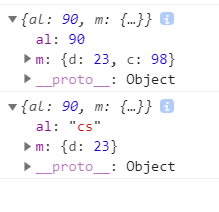

extend是jQuery中一个比较核心的代码，如果有查看jQuery的源码的话，就会发现jQuery在多处调用了extend方法。
jQuery.prototype.extend = jQuery.extend = function(){
var target = arguments[0] || {}; //获取第一个参数作为目标结果
var i = 1; //设置开始扩展的下标，扩展时第一个参数不会进行改变，不需要遍历
var length = arguments.length;
var option;
if(typeof target !== 'object') {
target = {};
}
for(; i< length; i++){
option = arguments[i]
for(var name in option){
target[name] = option[name]
}
}
return target
}
//调用
var i = {a: 0};
var b = {c: 9};
console.log($().extend(i,b)) // {a:0, c:9}在上面，我们已经写出的extend的基础版本，但是如果我们简单测试一下，就会发现仍是有问题存在的。
我们可以使用上面的方法，对下面的对象进行扩展
var n = {
al: 90,
m: {
d: 23,
}
}
var b = {m:{
c: 98
}};
console.log($().extend(n,b)) // {al: 90, m: { c: 98 }}简单的从结果来看，返回的结果并不符合我们的预期，基础版本的方法似乎只是简单的值替换而已。那么来简单升级一下代码吧。
在升级代码之前，需要了解一下关于浅拷贝和深拷贝的相关。
var i = {a: 0};
var b = {c: 9};
console.log($().extend(i,b)) // {a: 90, c:9}
i.a = 90 var n = {
al: 90,
m: {
d: 23,
}
}
var b = {m:{
c: 98
}};
console.log($().extend(true,{},n,b))
console.log(n)
n.al = "cs"结果：

jQuery.extend是提供深拷贝的，需要将第一参数传为true。
基本思路:
var deep = false;
if (typeof target === 'boolean') {
deep = target;
target = arguments[1];
i = 2; //因为第一参数为boolean,所以拷贝对象从argument[1]开始，但通常第一个拷贝对象是不需要比遍历的，所以遍历下标从2开始。
} if (length === i) { //此时extend参数只有一个，但是目标应该是this,所以获取到this;
target = this; //但同时 i = 1;无法进行遍历，所以将遍历下标后退一位
i--;
}
jQuery.extend({
isArray: function(obj) {
return toString.call(obj) === '[object Array]';
},
isPainObj: function(obj) {
return toString.call(obj) === '[object Object]';
}
}) jQuery.prototype.extend = jQuery.extend = function(){
var target = arguments[0] || {};
var i = 1;
var length = arguments.length;
var option, copy, src, copyisArray, clone;
for(; i< length; i++){
if((option = arguments[i]) != null ){
for(name in option) {
src = target[name];
copy = option[name];
if(jQuery.isPainObj(copy) || (copyisArray = jQuery.isArray(copy))) {
if(copyisArray) {
copyisArray = false;
clone = src && jQuery.isArray(src) ? src : [];
} else {
clone = src && jQuery.isPainObj(src) ? src : {};
}
target[name] = jQuery.extend(clone,copy)
} else if(copy !== undefined) {
target[name] = copy
}
}
}
}
return target
}行了，到这里为止，我们就已经完成了简单的extend函数了，其实比较重要的是深拷贝和浅拷贝，关于这一点，下次再记录吧。